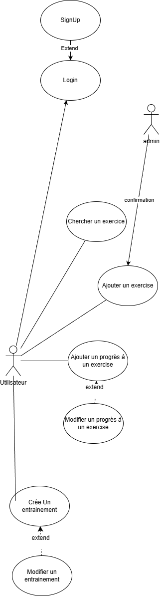

Aperçu du projet
Une description claire de l'application
Le logiciel vous permet de créer un serveur qui gère les données utilisateur pour une application d'entraînement. Il permet la synchronisation des séances d'entraînement sur plusieurs interfaces utilisateur disponibles sur plusieurs plateformes. Cette application permettra aux utilisateurs de suivre facilement leur progression, de savoir quel exercice faire selon leurs besoins et comment l'exécuter correctement, et de s'inspirer.
L'énoncé du problème et les objectifs (cadre)
Cette application résout le problème de synchronisation des séances d'entraînement sur plusieurs plateformes dans une interface utilisateur conçue pour l'entraînement.
L'objectif est de créer une application auto-hébergée et open-source qui soit simple, documentée et exclusivement dédiée aux entraînements.
Un aperçu des fonctionnalités de l'application
- Créer des entraînements personnalisés (l'utilisateur pourra sélectionner des exercices puis créer des entraînements qui sont des listes d'exercices)
- Suivi de la progression (l'utilisateur saisira le nombre de répétitions/temps, de séries et le poids).
- Recherche d'exercices avec ou sans filtrage
Description des utilisateurs et des rôles
Développeurs
Autres utilisateurs qui souhaitent participer à l'amélioration de l'application.
Utilisateurs
Utilisateurs qui souhaitent héberger l'application.
Exigences fonctionnelles et non fonctionnelles
Fonctionnelles
- Base de données : utilisateur, exercices, liste d'exercices créés par l'utilisateur, entraînement.
- API REST
- Création d'une séance d'entraînement
- Recherches d'exercices
- Suivi de la progression
- Validation administrative
Non fonctionnelles
- Principes SOLID
- Documentation claire
Contraintes de l'application
- Backend : Next.js
- Frontend : Angular
Cas d'utilisation

Spécifications des cas d'utilisation :
Rechercher un exercice :
| Description | Rechercher un exercice dans la base de données publique |
|---|---|
| Acteurs | Utilisateur |
Ajouter un exercice :
| Description | Ajouter un exercice à la base de données publique |
|---|---|
| Acteurs | Utilisateur |
Ajouter la progression de l'utilisateur à un exercice :
| Description | Ajouter la progression de l'utilisateur liée à l'utilisateur, en spécifiant le poids, la durée, etc. |
|---|---|
| Acteurs | Utilisateur |
Modifier la progression de l'utilisateur pour un exercice :
| Description | Modifier la progression de l'utilisateur liée à l'utilisateur, en spécifiant le poids, la durée, etc. |
|---|---|
| Acteurs | Utilisateur |
Créer un entraînement :
| Description | Créer un entraînement lié à un utilisateur |
|---|---|
| Acteurs | Utilisateur |
Modifier un entraînement :
| Description | Modifier un entraînement lié à un utilisateur |
|---|---|
| Acteurs | Utilisateur |
Planification à travers la méthodologie de développement
La planification aura lieu chaque semaine pendant la période de cours, garantissant que les objectifs sont atteints. De plus, la méthodologie de développement sera itérative, permettant une réorganisation du projet en cas de problèmes. Le projet sera divisé en trois trimestres : - Développement initial de l'API - Interface utilisateur - Déploiement